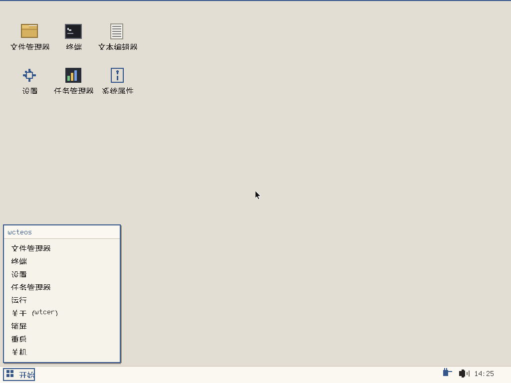
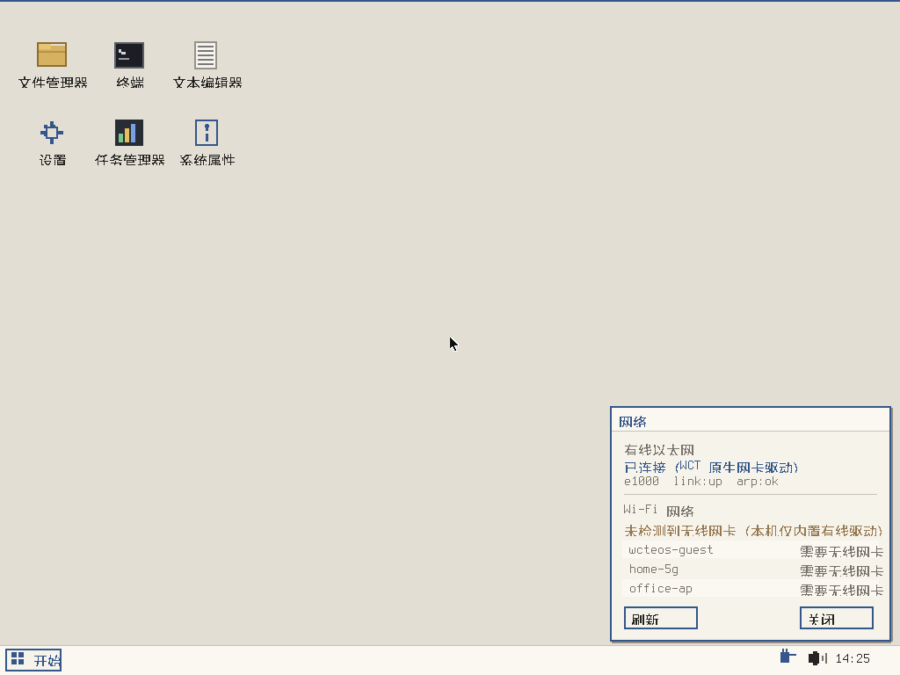
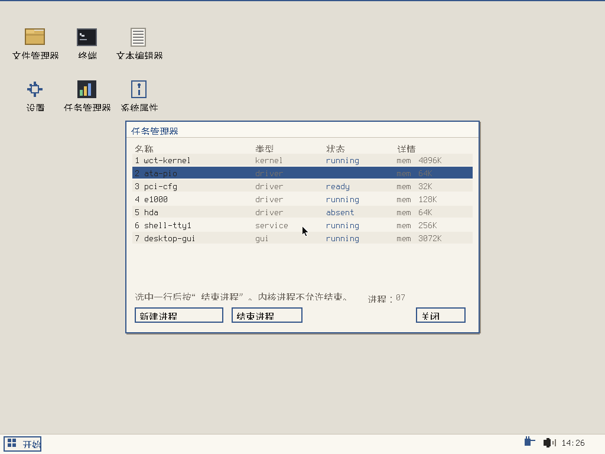
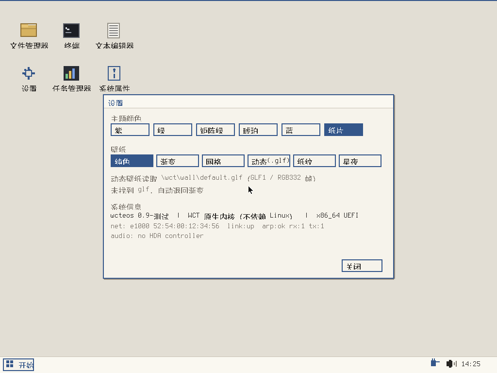

wcteos 是一个从零写起的小系统：没有 Linux 内核、没有 GRUB、没有桌面环境框架。开机由固件直接加载 BOOTX64.EFI，内核自己枚举 PCI、初始化磁盘与网卡、建立进程表、绘制桌面。全部代码是 C，编译成单个 EFI 可执行文件。

桌面图标与任务栏

托盘网络面板

任务管理器与结束进程

主题与壁纸设置
| 文件 | 说明 |
|---|---|
| wcteos-0.9-test.iso | UEFI 光盘镜像，可刻盘或挂到虚拟机光驱 |
| wcteos-0.9-test-usb.img | 48MB FAT32 镜像，dd 到 U 盘即可启动 |
| 源码与内核代码 | 全部 C 源码、编译脚本、构建说明 |
sudo apt install gcc-mingw-w64-x86-64 gcc-mingw-w64-i686 mtools dosfstools xorriso x86_64-w64-mingw32-gcc -ffreestanding -fno-stack-protector -fno-builtin \ -mno-red-zone -O2 -Ikernel -c kernel/kernel.c -o kernel.o x86_64-w64-mingw32-gcc -nostdlib -Wl,--subsystem,10 -Wl,-e,efi_main \ -Wl,--image-base=0x10000000 -Wl,--enable-reloc-section -Wl,--gc-sections \ -o BOOTX64.EFI kernel.o -lgcc
把 BOOTX64.EFI 放到 FAT32 分区的 \EFI\BOOT\ 下即可引导。桌面资源放在 \wct\：wall\default.glf 为动态壁纸，autogui 存在时开机直进桌面。
| 后缀 | 含义 |
|---|---|
| .wct | 可执行程序，内核加载后运行 |
| .wet | 一键脚本，等价于 .bat / .sh |
| .dwc | 依赖声明，等价于 .dll 的系统文件与依赖描述 |
| .wcte | 压缩包格式，配 WCTE-Compressor 打包与解包 |
当前为测试版。已实测：纸片中文桌面启动、PS/2 鼠标初始化、e1000 与 rtl8139 网卡 ARP 收发、任务管理器结束进程、壁纸切换、ISO 与 U 盘镜像引导。音频仅完成 HDA 控制器初始化，codec 未响应；无线网卡未内置驱动；8139 在 slirp 下连续收包仍不稳定，需实体网卡复测。
.wct 编译手册
WCT1 头结构、可复制的 mingw 编译命令、WCTX 打包与入口约束。
终端使用手册
文件、网络、系统三类命令全表，以及当前限制。
内核运行报告
启动各阶段实测结果、rdtsc 原始计数与口径说明。